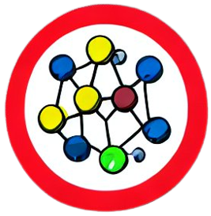
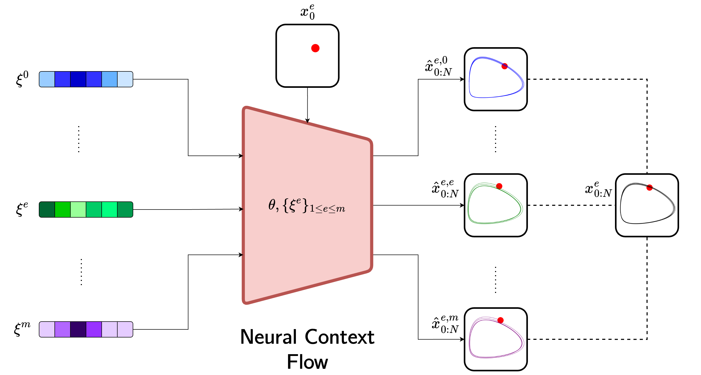
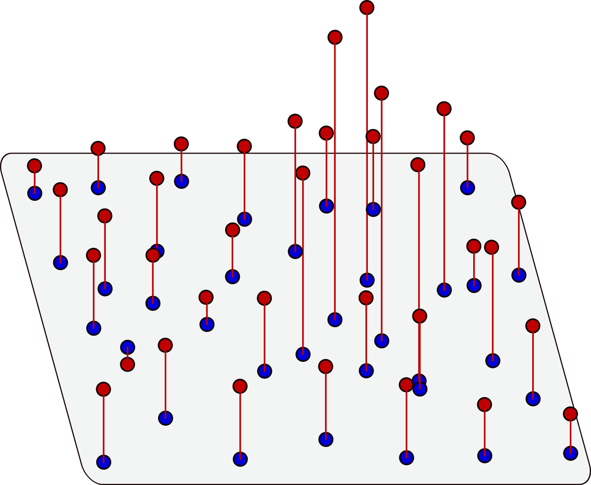
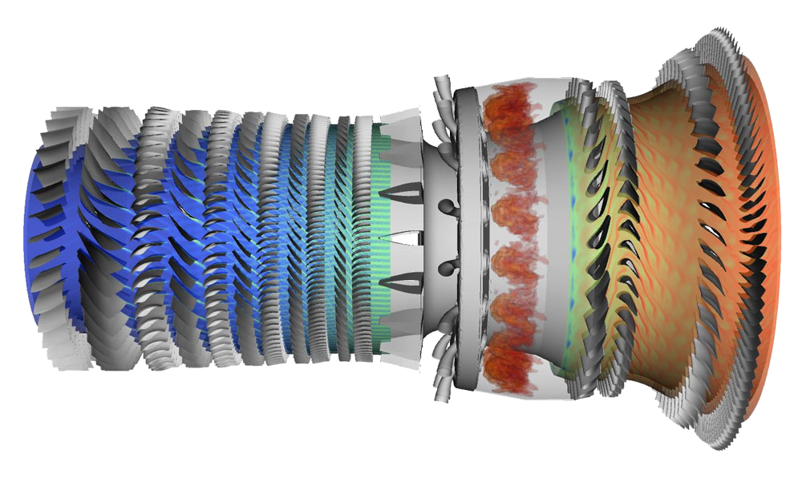
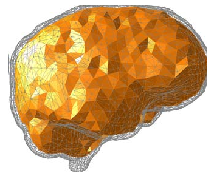
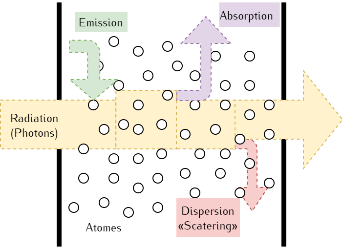

Roussel.
About
CV et al.
Publications
Projects
Blog
Projects
Categories
AI
Fluid Dynamics
Functional Analysis
HPC
Machine Learning
Meta Learning
Modeling
Optimal Control
Scientific Computing
Simulation
Home
Projects
Order By
Default
Title

Neural Context Flow
Machine Learning
Simulation
Meta Learning
Our goal is to build a foundational machine learning model for all of science. Neural Context Flow is the first steps towards that goal, which generalizes dynamical system…

UPDES
Modeling
Simulation
Optimal Control
Machine Learning
This project emerged out of the frustration of there existing no differentiable PDE simulator capable of handling the diversity of problems out there. We identified Radial…

AI4HPC
AI
HPC
Fluid Dynamics
How would you design a jet engine without ever building anything ? This project introduced a Graph Neural Network model to accelerate the Algebraic Multigrid (AMG) method…
ArcticFloes
Modeling
Functional Analysis
The rapid shrinking of the Arctic ice cap these last decades is seen as one of the most striking manifestations of global warming. We investigated what happens when two or…

ϕ
-FEM
Modeling
Scientific Computing
In recent years, numerical models using the Finite Elements Method (FEM) to simulate the soft tissue mechanisms of the human body have attracted a great interest. In the…

VnetAgainstCancer
AI
Simulation
We solved a computerized tomography inverse problem: given the signal on the boundaries of an organ, we want to rebuild the density map of the organ, hence detecting…
No matching items